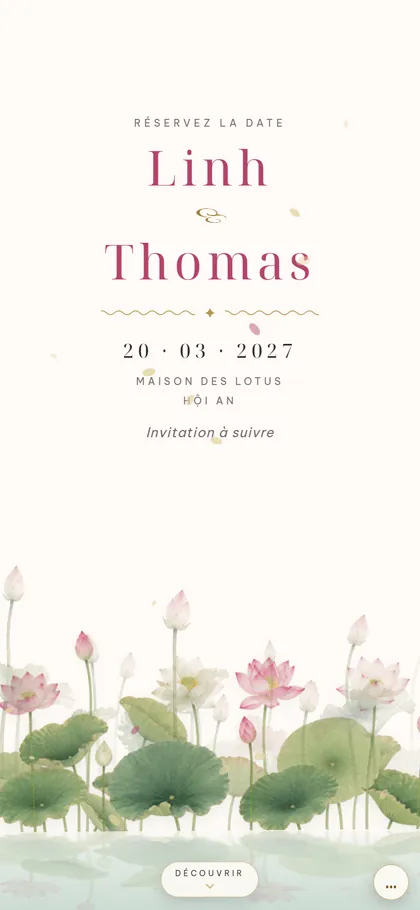
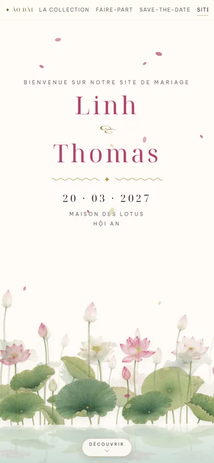
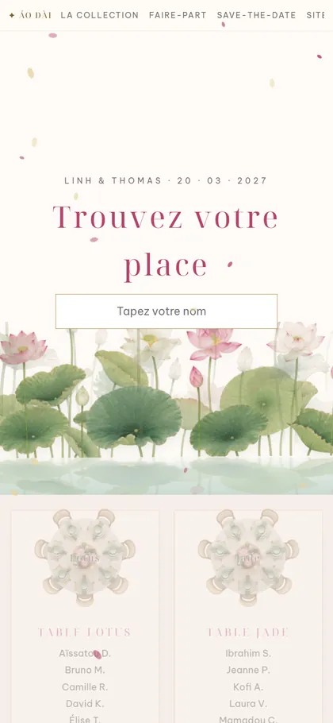
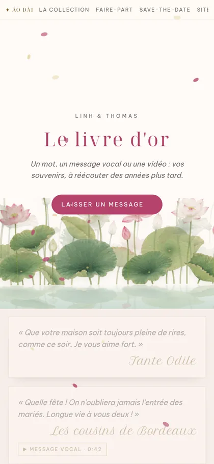

Save-the-datePour réserver la date
Site du mariageProgramme, lieu, hébergement, réponse
Plan de tableChacun trouve sa placeMur photoLes photos des invités, en direct
Livre d'orMots, voix et vidéosMaison Vivat · Collection réaliste
Le parfum des lotus au bord de l'eau, la soie qui frôle les chevilles, les mains jointes pour saluer les anciens. Puis les lanternes s'allument sur la rivière, et deux familles n'en font plus qu'une.
Laque et feuille d'or, étang de lotus peint sur soie : un mariage de printemps au bord de la rivière, avec un clin d'œil à l'áo dài.


Touchez un visuel pour l'ouvrir

Save-the-datePour réserver la date
Site du mariageProgramme, lieu, hébergement, réponse
Plan de tableChacun trouve sa placeMur photoLes photos des invités, en direct
Livre d'orMots, voix et vidéosVoir le faire-part tel que le reçoit Aminata, une invitée